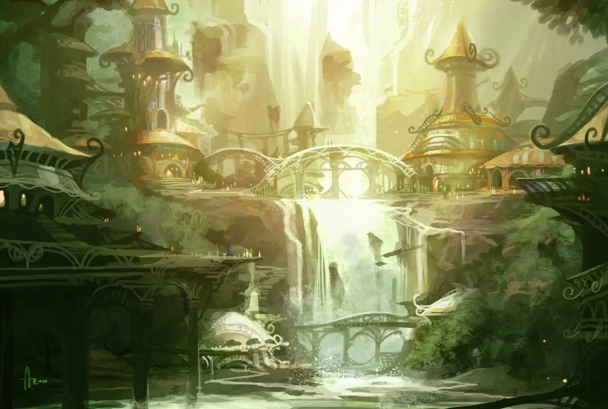
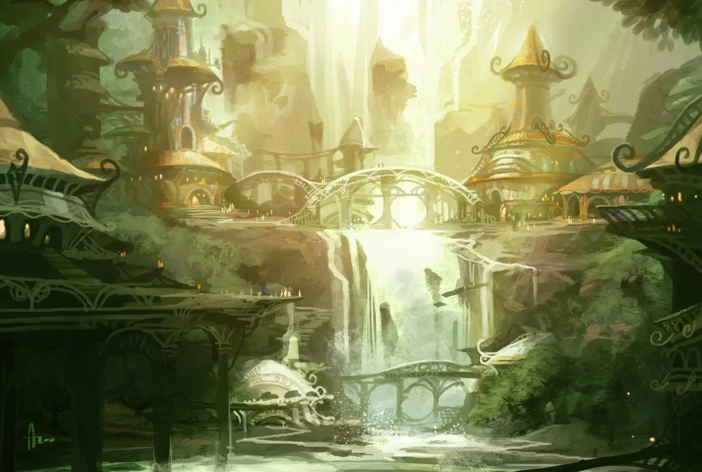
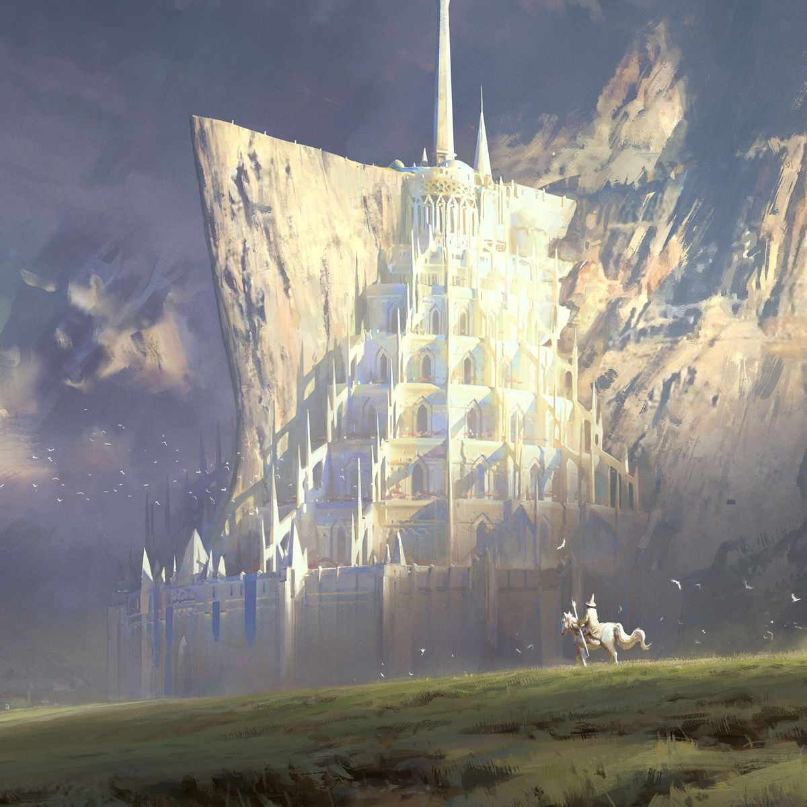
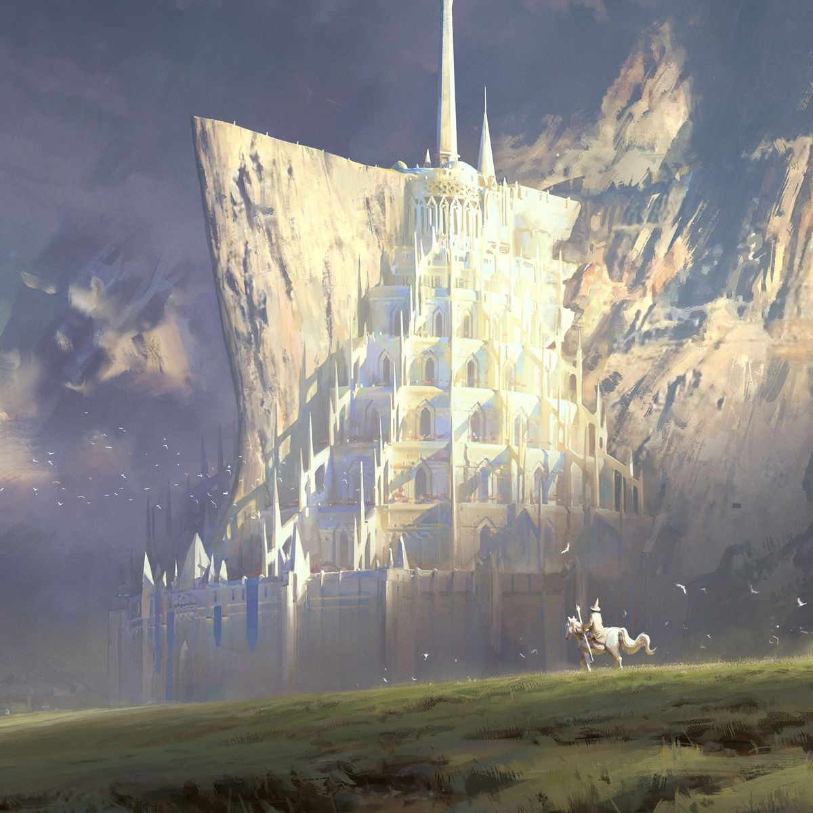

Menzoberranzan
Bajo montañas huecas y cavernas que respiran oscuridad, yace Menzoberranzan: la capital del linaje caído, la cuna de los Elfos del Vacío. No es solo una ciudad: es una herida en el mundo. Sus torres retorcidas brillan con luz pálida, moldeadas por magia que no crea, sino devora. Las sombras se mueven incluso cuando nadie camina; la arquitectura responde a pensamientos, no a manos. Aquí, la supervivencia es ley. Los habitantes descienden del antiguo exilio primordial, de aquellos que la luz olvidó y que escucharon el susurro del Vacío. Sus ojos blancos vigilan cada rincón, capaces de ver lo que la oscuridad intenta ocultar.
 

 
